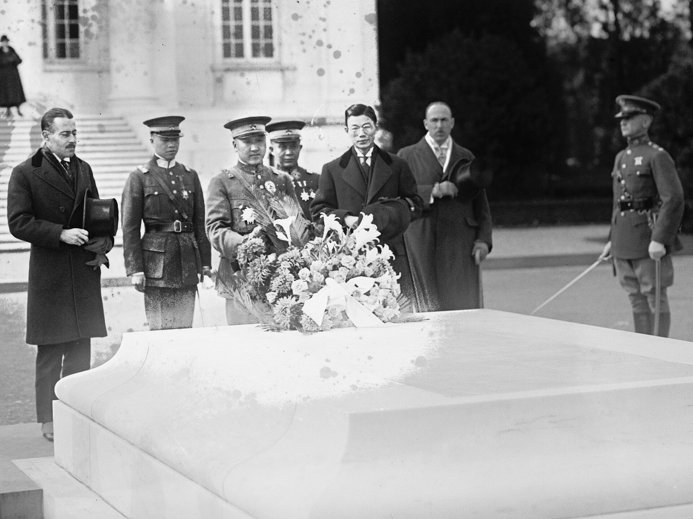

第 9 章
徐树铮收复外蒙
库伦城东的旧俄领事馆门前，一面沙俄国旗仍在旗杆上飘着，但领事馆里已经没有人办公了。西北边防军第三混成旅的先遣营在六月十三日傍晚开进库伦东郊，营长褚其祥在行军日记里写下一行字：“抵库伦，旧俄领署空无一人，门窗破损，似已废弃数月。”这本日记后来保存在北洋政府陆军部档案中，字迹潦草，但时间地点确凿。
先遣营的进入本身并不引人注目。自1918年春起，北京政府应外蒙古自治政府请求，陆续派遣小股部队进驻库伦，名义是协防旧俄白军或苏俄红军可能的越境侵扰。这些部队人数不多，驻扎在城郊，与外蒙古自治政府之间维持着一种微妙的距离。库伦都护使陈毅负责协调驻军与库伦当局的关系，他的电报中反复出现一个措辞：“暂驻”、“协同”、“不干涉内政”。
北京政府在1918年的大部分时间里，对库伦的政策基调是谨慎的：不主动打破《中俄蒙协约》规定的自治框架，但也不放弃任何实质存在的机会。但1919年春天的政治空气变了。变化的直接推动力来自北京。
1919年3月，皖系控制下的北京政府内部，就外蒙古问题有过一次关键讨论。参与讨论的是国务总理靳云鹏、陆军总长靳云鹗、交通总长曾毓隽，以及参战督办段祺瑞的核心幕僚徐树铮。讨论的记录没有以正式会议纪要的形式保存下来，但三月十八日徐树铮呈段祺瑞的一份节略，可以视为这次讨论的逻辑终点。这份节略现存于中国第二历史档案馆北洋政府档案中，编号“西北筹边—1号”。节略的核心判断是一句话：
“俄势既倒，日人觊觎，蒙地悬于人手，若不速图，恐终非我有。”
这段话与1918年12月北京三部联合会议的结论“若不速图，蒙地将非我有”一脉相承，但语气已经从忧虑变成了决断。徐树铮在节略中提出了一个具体方案：设立西北筹边使一职，统一管辖外蒙古军政事务，废除都护使的“协调”职能，以军事力量为后盾，迫使外蒙古自治政府取消自治。方案的军事部分包括：从皖系控制的参战军中抽调一个混成旅，沿张库公路进驻库伦；在库伦设立西北边防军总司令部；同时在张家口、库伦之间设立兵站，保证后勤线畅通。节略的最后一段，徐树铮写道：“此事宜速不宜缓。缓则日人得间，蒙人观望，俄局一变，更难着手。”

字迹工整，没有涂改，说明这是一份誊清后的正式文本，而非草稿。段祺瑞在节略上批了四个字：“照此办理。”日期是三月二十二日。
四月十七日，北京政府正式发布大总统令，任命徐树铮为西北筹边使，兼西北边防军总司令。命令原文载于1919年4月18日《政府公报》，措辞简洁：
“特任徐树铮为西北筹边使，并兼西北边防军总司令。此令。”
命令正文只有十九个字，但附带的《西北筹边使职权章程》对权限的规定要详细得多。章程共七条，核心内容是：西北筹边使管辖范围为“外蒙古全境及沿边各旗”，有权节制辖区内所有驻军和地方官署，有权办理对外交涉事务，有权筹措和使用边防经费。第七条特别规定：“西北筹边使得便宜行事，遇有紧急情况，得先行处置，事后呈报。”这一条赋予了徐树铮几乎不受约束的行动自由。
任命的消息传到库伦，外蒙古自治政府的反应是分裂的。库伦政府的外务大臣车林多尔济在四月下旬召集了一次王公会议。与会的有土谢图汗部、车臣汗部、三音诺颜汗部的几位亲王和郡王，以及哲布尊丹巴活佛的经师。会议的记录没有被保存下来，但陈毅在五月二日发给北京外交部的电报中，报告了他从库伦衙门办事人员处获知的消息：
“车林多尔济谓：北京此举，显系变更中俄蒙协约之准备。西北筹边使权限之广，远超都护使，实为总督之变名。蒙人不可轻易应允。然与会王公意见不一。土谢图汗部亲王谓，俄人已去，蒙地无依，不如归向中央，求得保护。车臣汗部某公则主张观望，俟北京新官到任后再定进退。”
陈毅的电报还提到，哲布尊丹巴活佛的态度“暧昧不明”。活佛的经师在会议上代传了一句话：“凡事以蒙古之福为念，勿遽作决断。”这句话的含义可以被解读为谨慎，也可以被解读为默许。陈毅在电报中倾向于后一种解读，他写道：“活佛似无意对抗中央，但亦不愿主动表态，此系一贯之策。”
陈毅本人对徐树铮的任命持保留态度。他在五月二日的同一份电报中，用了一个相当克制的措辞表达了他的担忧：
“树铮使边，职权过重，蒙人疑惧。若操之过急，恐生枝节。”
但他的意见没有被北京采纳。五月十日，外交部回电陈毅，措辞同样克制但立场明确：
“西北筹边使职权系中央核定，为统一事权起见。陈都护使应协同办理，勿生歧异。”
“勿生歧异”四个字，是北京政府对库伦原有驻外官员发出的明确指令：政策方向已经改变，不再有讨论空间。1919年6月24日，徐树铮离开北京，沿京张铁路西行。同行的是参战军第三混成旅的旅部和直属部队，共约两千人。第三混成旅的主力已经从驻地陆续向张家口集结，等待与徐树铮会合后一同北上库伦。徐树铮在出发前给段祺瑞发了一封短信，现存于北洋政府档案中：
“铮即日西行，先至张家口整军，待各部到齐，即向库伦推进。沿途兵站已设三处，粮秣可支三月。请释念。”
从张家口到库伦，传统的张库公路全长约一千二百公里，沿途经过察哈尔草原、戈壁南缘、土谢图汗部辖境。第三混成旅的行军分成三个梯队：第一梯队为骑兵侦察连，第二梯队为徐树铮直属的旅部和步兵团主力，第三梯队为炮兵连和辎重营。行军速度控制在每天四十公里左右。
七月十八日，徐树铮率第二梯队抵达库伦南郊的那来哈。库伦城内的驻蒙办事处官员出城迎接。陈毅也在迎接队伍中，两人在马上见了面。在场的目击者后来对库伦办事人员描述了这次见面的情形。徐树铮对陈毅说的第一句话是：“陈公在此辛苦多时。今后之事，由徐某接办。”语气平淡，没有寒暄。陈毅的回答没有被记录，但两人随即并辔入城，表面关系维持了体面。
徐树铮抵达库伦后的第一道公开措施，不是军事命令，而是一份张贴在库伦街头的布告。布告日期署为民国八年七月二十日（1919年7月20日），原文见于北洋政府陆军部档案“西北边防军”卷宗。布告全文如下：
“为布告事。照得本使奉大总统明令，出任西北筹边使，兼理西北边防军总司令，节制外蒙古全境驻军及各官署。本使职在保卫边疆，维持治安，保护商民，辑睦蒙众。自本使到任之日起，库伦及外蒙古各旗，悉依中央法令办理。所有治安事宜，由本使派兵会同各旗王公办理。商民人等，各安生业，不得听信谣言，自相惊扰。其有造谣惑众、妨害秩序者，军法从事。切切。此布。”
布告的措辞经过精心设计。“保卫边疆、维持治安、保护商民、辑睦蒙众”四组词语，按照清代以来中央派边大员告示的惯用格式排列，强调的是秩序和稳定，而不是主权变更。但“悉依中央法令办理”这一句，直接否定了外蒙古自治政府的法源基础——自治政府行使权力的法理依据是《中俄蒙协约》授予的自治权，与“中央法令”是并行的两套体系。现在徐树铮的单方面布告，将“中央法令”置于唯一合法地位，自治权在事实上被取消了。
布告贴出后的第三天，七月二十二日，外蒙古自治政府总理兼内务大臣巴德玛多尔济前往徐树铮的行辕。
行辕设在库伦城内原驻蒙办事处大院，院门前增派了双岗，卫兵全部来自徐树铮的直属部队。
巴德玛多尔济此行，按照库伦衙门的记录，是“拜会”性质，但谈话内容很快就转向了实质问题。徐树铮对巴德玛多尔济提出的要求，在后来的外务部电报中有简略记载。七月二十四日，徐树铮致电北京外交部，报告了会见情形：
“巴总管（指巴德玛多尔济——引者注）来见。职（徐自称）告以中央之意：外蒙取消自治，仍归旧制，一切政务由中央派员管理。巴总管面有难色，云自治系中俄蒙三方条约所定，若遽取消，恐俄国不能无言。职答以俄乱未已，无暇东顾，此正蒙人自决归向之机。巴总管默然。”
“默然”这个状态，在徐树铮的笔下只用了两个字，但巴德玛多尔济离开行辕后，随即召集了自治政府内阁会议。会议的议题是：如何应对徐树铮的要求。内阁成员中，倾向于接受的以王公派为主，倾向于抵抗的以喇嘛派为主。哲布尊丹巴活佛本人仍未明确表态。
内阁会议没有达成一致的决议。巴德玛多尔济向徐树铮的答复是：“事关重大，须集众议，请宽限时日。”
徐树铮没有给予明确答复，但在此后一周内，他的军事部署迅速展开。第三混成旅的三个团按照既定方案分别进驻库伦城各要点。第一团驻扎城北甘丹寺附近高地，控制了库伦通往恰克图的大道；第二团驻扎城东的买卖城，控制了与华商聚集区的联络通道；第三团和旅部直属炮兵连驻扎城西，位于库伦衙门和活佛宫殿之间。
各部队在进驻当日接到了徐树铮签发的军事训令。这份训令的编号为“西北防字第12号”，日期1919年7月25日。训令第二条的内容是：
“各部队应严密警戒，控制交通要道，检查往来行人。未经本使许可，任何蒙人不得擅自离城。外蒙官员往来，须有本使签发之路凭。”
第三条是：
“夜间自酉时起至卯时止，各街巷禁止通行。违者拘捕。”
第五条则是关于与外蒙人接触的规定：
“官兵人等，非因公事，不得与蒙人私相往来。需购物者，由各连官长指定人员，在规定时间前往买卖城采购。”
这三条训令构成了一个完整的控制体系：限制外蒙古官员的行动自由，管控夜间治安秩序，隔离驻军与外蒙古民众之间的日常接触。其实际效果是，库伦城自1919年7月25日起，进入了事实上的军事管制状态。
徐树铮开始直接向外蒙古王公和喇嘛高层施加压力。他采用了分化策略：对外蒙古自治政府内部的王公派，许以利益，保全其爵位和财产；对喇嘛派，则施加军事威胁。
八月初，徐树铮召见土谢图汗部亲王杭达多尔济。杭达多尔济是1911年外蒙古独立的首倡者之一，曾亲赴俄国寻求支持，在整个外蒙古王公中地位特殊。徐树铮对他做了两个承诺：一，取消自治后，北京政府每年拨给外蒙古财政补助银元一百万元；二，各旗王公原有爵位、俸禄、属民依旧不变。杭达多尔济的反应是“首肯”。徐树铮在八月五日致段祺瑞的密电中报告：“杭达已允归复，并愿联络各部王公共呈请愿书。”
但喇嘛集团的态度不同。八月中旬，哲布尊丹巴活佛的经师向库伦衙门传话，表示“活佛不愿遽变旧制”，认为自治是“俄人担保之物，不可轻弃”。徐树铮对此的回应是增兵。八月二十日，新编独立骑兵团一千二百人从张家口开抵库伦，驻扎在哲布尊丹巴活佛冬宫以南约三公里处。部队的行军路线经过活佛宫殿的正前方道路，这是有意为之的安排。
八月二十八日，外蒙古自治政府总理巴德玛多尔济再次前往徐树铮行辕。这一次会谈的内容，比七月二十二日那次更为直接。徐树铮明确提出：外蒙古自治政府须于九月底之前，呈文北京政府，请求取消自治，恢复前清旧制。呈文须由外蒙古四部汗、王公、喇嘛联席会议通过，并由哲布尊丹巴活佛盖印。
巴德玛多尔济提出了一个替代方案：外蒙古可以“声明内向”，但不取消自治名义；可以接受北京政府派遣的行政专员，但不接受军队长期驻扎。徐树铮当场拒绝。九月二日，他致电北京，报告了会谈的僵局。电报的措辞开始带有压迫感：
“巴总管及一部王公反复推诿，意在拖延。观其情状，仍存观望之心，希冀俄局有变或日人插言。库伦城内外，已在职部掌控之中。若蒙人仍不觉悟，唯有以兵威临之。”
北京政府在九月四日复电，授权徐树铮“相机办理”。这四个字的含义是明确的：徐树铮有权动用他所掌握的军事力量，迫使外蒙古自治政府就范。九月九日，徐树铮采取了一个决定性步骤。他命令第三混成旅第二步兵团一部开入库伦衙门广场，包围了正在举行王公会议的外蒙古自治政府办公场所。包围时间从上午九时持续到下午四时，与会王公和官员不得离开。徐树铮本人于上午十时进入会场，向与会者宣读了北京政府的电令全文，随后留下一份预先拟好的呈文草稿，要求与会者在三天内签署。呈文草稿的核心段落，后来出现在1919年10月1日北京《政府公报》上。其措辞如下：
“外蒙古自前清以来，即属中国版图。前因时局多故，不得已而自治。现俄国乱事方殷，无力顾及蒙古。外蒙全体王公、喇嘛、民众，一致愿取消自治，恢复前清旧制，归向中央，以保永固之局。兹将自治政府撤销，一切政务，仍由中央派员管理。”
呈文中“一致愿取消自治”六个字是关键。事实上，外蒙古王公喇嘛对取消自治的意见从未“一致”。陈毅在此前数月间的电报中反复报告过内部分歧。但这份呈文以“全体”的名义发声，其政治效果是将一个分裂的决策过程，呈现为一个统一的请愿行动。
九月十二日，在徐树铮规定的最后期限前，外蒙古自治政府总理巴德玛多尔济、外务大臣车林多尔济、土谢图汗部亲王杭达多尔济、车臣汗部郡王那旺那林、三音诺颜汗部亲王彭楚克车林等人，在呈文上签字或盖章。哲布尊丹巴活佛的印章，据当时的库伦衙门记录，是经其经师之手加盖的。活佛本人是否亲自过目，没有明确记录。
九月十五日，库伦办事人员将签署完毕的呈文正本送交徐树铮行辕。徐树铮于当天将呈文电传北京。
九月十六日，北京政府大总统徐世昌发布命令，批准外蒙古取消自治。命令全文见于九月十七日《政府公报》：
“据外蒙古博克多哲布尊丹巴呼图克图汗，及四部汗、王公、喇嘛等合词呈请：自愿取消自治，恢复前清旧制。情词恳切，出于至诚。应即照准。所有外蒙古一切政务，自应仍由中央政府派员管理，以符旧制。”
命令发布当天，北京政府同时宣布改组库伦行政机构：设立西北筹边使公署，裁撤库伦都护使署，原都护使陈毅调回北京另有任用。外蒙古自治政府的所有机构，包括总理、内阁、外务部、内务部、财政部等，一律撤销。各旗事务，由西北筹边使公署派员直接管理。
撤销机构的命令在库伦得到了迅速执行。九月二十日，西北筹边使公署派人进入原外蒙古自治政府办公场所，封存档案，接收印信。前自治政府总理巴德玛多尔济被留在公署中担任“咨议”职务，实为软禁。外务大臣车林多尔济被限制居住在库伦城内，不得擅离。其他王公各回本旗，但需定期向西北筹边使公署报告行踪。
徐树铮在库伦建立的这套控制体系，表面上是全面而严密的。但它的运转完全依赖于三根支柱：徐树铮个人的军事权威、皖系在北京政府中的政治地位、以及从北京到库伦的后勤补给线。这三根支柱的脆弱性，在收复行动成功后不久就开始显露。第一根支柱——徐树铮个人的军事权威——是建立在皖系军队的效忠之上的。
西北边防军的主体是参战军改编而来，从军官到士兵，其忠诚对象是皖系这个政治—军事集团，而非抽象的国家。徐树铮作为段祺瑞的核心幕僚，他的权威来自他在皖系内部的地位。一旦皖系在北京的政治权力发生动摇，徐树铮在库伦的军事权威将立即受到影响。这种影响不需要等到皖系倒台，只要北京政局出现动荡迹象，军官们就会开始计算自己的前程。
第二根支柱——皖系在北京政府中的政治地位——在1919年下半年已经出现裂纹。直系和奉系对皖系垄断北京政权的不满，正在积累。徐树铮以西北筹边使身份统辖外蒙古，被直系视为皖系扩充势力范围的手段。直系控制的报刊开始在舆论上攻击徐树铮“虚糜国帑”、“拥兵自重”。北京政府内部，就西北筹边使公署的经费问题，也出现了争议。
第三根支柱——后勤补给线——从一开始就捉襟见肘。从张家口到库伦的一千二百公里运输线，需要穿越人口稀少的草原和戈壁地带。西北边防军在沿线设立了三处主要兵站：张家口、滂江、叨林。每处兵站派驻一个辎重连，配备骆驼和大车。
但运输效率受季节影响极大。夏季路面松软，牲畜饮水困难；冬季风雪封路，物资损耗严重。
第三混成旅的维持，每月需要从张家口运输粮秣、被服、医药、弹药等物资约二百吨。按照当时的运输能力，维持这个补给量已经非常紧张。
更致命的问题是经费。西北筹边使公署的日常开支和驻军的饷项，理论上由北京政府财政部拨付。但北京政府在1919年的财政状况极其拮据。军阀割据导致中央税收来源缩减，各省截留税款已是常态。段祺瑞控制下的北京政府，主要靠向日本借款维持运转。财政部长龚心湛在1919年8月的一份呈文中，明确表示“部库空虚，各省协款解不足额，各项行政经费均须核减”。
西北筹边使公署的预算，最初核定为每月银元三十五万元。但这个数字从来没有足额拨付过。现存北洋政府财政部档案中，有一份1919年10月20日的公函，文号“财字第1734号”，内容是关于西北筹边使公署十月份经费的拨付。公函写道：
“查西北筹边使公署十月份经费三十五万元，已拨付十五万元。其余二十万元，俟各省协款解到再行补拨。”
此后数月间，“先拨X万元，余款再行补拨”的措辞重复出现。1919年11月，实拨十八万元。十二月，实拨十二万元。1920年1月，实拨十万元。到1920年2月，即旧历新年前后，西北筹边使公署收到的一月份经费只有八万元。徐树铮在1920年2月15日致财政部的一封电文中，措辞开始显出急迫：
“库伦驻军饷项，自去岁十二月至今，仅领得半数。官兵已两月未发薪饷，军心浮动。恳速拨积欠之二十五万元，以安军心。”
这封电报没有得到财政部的全额回应。1920年3月，北京政府内部的政治斗争升级，皖系和直系的矛盾白热化。财政拨款进一步萎缩。徐树铮在库伦的统治，其物质基础正在从内部被掏空。
外蒙古王公在“归复”后向北京提出的第一系列请求，恰恰是财政补助。1919年11月初，土谢图汗部亲王杭达多尔济、车臣汗部郡王那旺那林等人，联名向西北筹边使公署递交了一份呈文，列举了五项请求：一，请中央每年拨付外蒙古各旗行政补助银元一百万元，按前清旧例分配；二，请中央拨专款修复库伦至张家口之间的驿站；三，请中央派遣蒙文学校教员，在各旗设立小学；
四，请中央在当地驻军中招募蒙籍士兵，以维护蒙地治安；五，请中央在库伦设立银行，发放低息贷款，救济蒙民生计。这五项请求的核心是财政资源的再分配：外蒙古王公们接受政治自权的丧失，但他们期望北京政府以经济补偿作为交换。徐树铮将这份呈文电转北京。财政部的答复是：第一项可以“酌量办理”，但一百万元的数字无法保证；
第二项和第五项“俟库款稍裕再行核办”；第三项可以派遣教员，但经费需由当地筹募；第四项“暂从缓议”。“酌量”、“核办”、“再行核办”、“暂从缓议”——这些措辞是北京政府对边疆财政诉求的一贯回应模式。在中央财政有能力辐射时，这种模式可以维持运转；在中央财政枯竭时，它意味着承诺的虚无化。
库伦驻军的实际兵力，在收复行动达到高峰后也开始下降。1919年9月，徐树铮在库伦的部队总数为：第三混成旅三千八百人，独立骑兵团一千二百人，辎重、工兵、医务等直属部队约八百人，合计约五千八百人。到1920年3月，由于欠饷引发的逃亡、冬季疾病导致的减员、以及部分部队调回内地，实际人数已经下降到约四千五百人。这些数字出自西北筹边使公署1920年3月的兵员清册，现存于北洋政府陆军部档案，清册编号“西北防—兵字37号”。四千五百名士兵，分布在库伦城内外近十个驻地。
他们要守卫从买卖城到恰克图大道的交通线，要维持库伦城的宵禁和检查制度，要对外蒙古各旗王公形成威慑，要防止旧俄白军或苏俄红军的潜在越境威胁。这个兵力和它所承担的任务之间，存在着一个不可忽视的差距。差距本身不是军事危机，但它意味着：一旦这支驻军遇到真正的外部压力或内部的指挥混乱，它的控制力将迅速瓦解。这种策略的成本，最终呈现在几组数字中。
西北边防军在库伦驻扎期间（1919年7月至1920年7月），北京政府累计拨付经费约一百八十万元，而预算应为四百二十万元。实际拨付率不足百分之四十三。库伦驻军1920年3月实际在册四千五百余人，较进驻初期减少约一千三百人。外蒙古王公联名请求财政补助的呈文，在递交后的五个月内，没有得到一份正式的批准答复。
这些数字不需要额外的评论。它们静静地躺在北洋政府那些已经发黄的档案纸页之间，等待有心人的翻检。它们比任何激昂的宣言都更有说服力地揭示了一个事实：在1919年的库伦，主权恢复的形式是完整的，但维持这种形式的资源基础，从一开始就是残缺的。